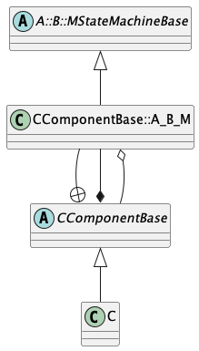

State Machines
1. Introduction
A state machine is a software subsystem whose behavior is described by states and transitions, together with related concepts such as signals, actions, and guards. State machines are important in flight software and embedded programming. In this section, we document the features of F Prime that support programming with state machines.
2. External and Internal State Machines
F Prime supports two kinds of state machines: external state machines and internal state machines. An external state machine is specified by an external tool, typically the State Autocoding for Real-Time Systems (STARS) tool. An internal state machine is specified in FPP, the modeling language for F Prime.
To program with external state machines, you typically do the following:
- Use an external tool, such as the Quantum Modeler or Plant UML, to express the state machine.
- Use the STARS autocoder to generate an implementation from the model.
- Write a small amount of code to make the FPP model aware of the implementation.
- Instantiate the state machine in one or more F Prime components.
- In the component implementations, write code that interacts with the state machine instances.
Steps 1, 2, and 5 are described in the STARS documentation. Steps 3 and 4 are described in the The FPP User's Guide. In the rest of this document, we will focus on the design of internal state machines.
3. FPP Modeling and Code Generation
To work with internal state machines in FPP, you do the following:
-
Define one or more state machines, specifying their behavior.
-
Add one or more instances of the state machines defined in step 1 to a component C.
-
In the implementation of C, write code that interacts with the generated code for the instances defined in step 2.
Steps 1 and 2 are fully documented in The FPP User's Guide. Here we focus on the generated code for state machines and for state machine instances.
4. State Machine Definitions
In this section we describe the generated code for a state machine definition
D with name M.
This code is generated into files MStateMachineAc.hpp and
MStateMachineAc.cpp
when you run fpp-to-cpp on an FPP model that includes D.
In the ordinary way of programming with F Prime, it is unlikely that you will directly interact with the code described here. Instead, you will use the component interface to state machine instances described in the next section. Therefore, if your primary interest is to program with F Prime state machines, you can skip this section.
For examples of generated code, you can do the following:
-
In a local installation of the
fprimerepository, go intoFppTestand runfprime-util generate --utand thenfprime-util check. -
Look at the FPP models in
fprime/FppTest/state_machine/internal/state. -
Look at the generated files in
fprime/FppTest/build-fprime-automatic-native-ut/FppTest/state_machine/internal/state.
4.1. The State Machine Base Class
Each state machine definition D in the FPP model becomes a C++ base class
MStateMachineBase, where M is the unqualified name of the definition.
This class is enclosed in the namespaces, if any, given by the qualified
name of D.
For example, a state machine definition whose qualified name is A.B.M in FPP
becomes a class A::B::MStateMachineBase in C++.
The base class provides a partial implementation which is completed when
the state machine is instantiated.
4.2. The Public Interface
Each generated state machine has the following public interface.
Types:
-
There is an enumeration representing the states of the state machine. These are the leaf states specified in the FPP model together with a special uninitialized state.
-
There is an enumeration representing the signals of the state machine. These are the signals specified in the FPP model together with a special signal that represents the initial transition on startup.
Member functions:
-
There is a function
getStatefor getting the current state of the state machine. -
There is one function
sendSignals for each signal s specified in the FPP model. If the signal s carries a value of type T, then this function has one formal parameter of type paramType(T); otherwise it has no formal parameters. Here paramType(T) means (1) T if T is a primitive type; otherwise (2)constreference toFw::StringBaseif T is a string type; otherwise (3)constreference to T.
4.3. The Protected Interface
Constructors and destructors: There is a zero-argument constructor and a destructor.
Initialization:
There is a function initBase with a single formal parameter id
of type FwEnumStoreType.
This function must be called on a state machine instance before
any signals are sent to the instance.
The parameter id represents the state machine identifier.
The type is FwEnumStoreType because the state machine identifier
type is an enumeration defined in the subclass.
Actions:
There is one pure virtual function action_a for each action
a specified in the FPP model.
Each action returns void has a formal parameter signal of type Signal.
If the action has a type T, then there is a second
formal parameter of type paramType(T).
Guards:
There is one pure virtual const function guard_g for each guard
g specified in the FPP model.
Each guard returns bool and has a formal parameter signal of type Signal.
If the guard has a type T, then there is a second
formal parameter of type paramType(T).
Member variables: Each state machine base class has the following member variables:
-
A member
m_idof typeFwEnumStoreType. This variable records the current state of the state machine, represented asFwEnumStoreType. The initial value is zero. -
A member
m_stateof typeState. This variable records the current state of the state machine. The initial value isState::__FPRIME_AC_UNINITIALIZED.
4.4. The Private Interface
For each state S and choice C in the state machine there is one entry function for S or C. This function implements the entry behavior for S or C as specified in The FPP Language Specification.
5. State Machine Instances
In this section we describe the generated code for instances of state machines that are part of a component C. This code is part of the auto-generated base class for C. In general there may be any number of instances of any number of state machines.
For examples of generated code, you can do the following:
-
In a local installation of the
fprimerepository, go intoFppTestand runfprime-util generate --utand thenfprime-util check. -
Look at the FPP models in
fprime/FppTest/state_machine/internal_instance/state. -
Look at the generated files in
fprime/FppTest/build-fprime-automatic-native-ut/FppTest/state_machine/internal_instance/state.
5.1. State Machine Identifiers
There is an enumeration SmId with numeric type FwEnumStoreType
that represents the state machine identifiers.
There is one enumerated constant for each state machine instance
in C.
5.2. State Machine Implementation Classes
There is one implementation class for each state machine definition M that is the type of a state machine instance in C. For example, if a state machine instance
appears in the definition of C, then the auto-generated base class for C contains an implementation class for M. This class has the following properties:-
It is a protected inner class of the auto-generated base class for C.
-
Its name is the fully qualified name of the state machine, converted to a C++ identifier by replacing the dots with underscores. For example, if a state machine has name
A.B.Min FPP, the C++ name of its implementation class isA_B_M. We will refer to this name as fqCppIdent(M). -
It is a public derived class of the state machine base class for M.
The following class diagram shows these properties, for a state
machine A.B.M instantiated in a component C:

Each state machine implementation class has the following elements in its interface.
Member variables:
There is a member m_component that is a reference to
the enclosing component instance.
This way the state machine instance can call into
the interface of the component instance.
Construction: There is a public constructor
that takes a reference *this to the enclosing component
as an argument.
It initializes the member variable described above.
Initialization: There is a public function
init with one formal parameter smId of type SmId.
This function casts its argument to FwEnumStoreType
and calls the function initBase defined in the base class.
Thus it provides a type-safe way to initialize the state
machine ID.
State ID: There is a public function getId
that returns the state machine ID.
It gets the value out of the m_id field defined
in the base class and casts it to SmId.
Thus it provides a type-safe way to get the state
machine ID.
Actions: For each action a of M, there is one private function that
implements the pure virtual function for a defined in the base
class for M.
The implementation calls the pure virtual function in the bass class for C
that corresponds to to M and a.
It passes in the state machine ID of *this.
Guards: For each guard g of M, there is one private function that
implements the pure virtual function for g defined in the base
class for M.
The implementation calls the pure virtual function in the base class for C
that corresponds to to M and g.
It passes in the state machine ID of *this and returns the Boolean value returned
by that function.
5.3. State Machine Instance Variables
For each state machine m in the FPP component model, there is
one private member variable m_stateMachine_m.
Its type is the state machine implementation class
corresponding to the state machine M instantiated by m.
5.4. State Machine Initialization
When a component C instantiates one or more state machines,
the standard init function of C calls the init function
on each state machine instance, passing in the enumerated
constant for each state machine ID.
In the standard sequence for F Prime FSW initialization,
the init function is called before any component instances
are connected.
Therefore, the initial transition of any state machine,
including any entry actions of the initial state, may
not emit events or telemetry or invoke any output port.
If you need to emit events or telemetry or invoke an output port
at the start of steady-state execution, you can have the
initial state be a state INIT that does nothing but transition to another
state START on an RTI signal.
When the component instance receives an RTI call on its schedIn port,
it can send the RTI signal to the state machine, causing
the transition to START.
At this point the components are connected, and the transition
to START can emit events or telemetry or invoke an output port.
5.5. Protected Member Functions
The auto-generated base class for C has the following protected functions.
5.5.1. Implemented Functions
The following functions have complete implementations. They are available to call in the derived class that implements C.
State getter functions:
For each state machine instance m in C, there is a const function
m_getState that gets the current state of m.
Signal send functions:
For each state machine instance m, and for each signal s defined
in the state machine M instantiated by m, there is a function
m_sendSignal_s for sending s to m.
If s carries data of type T, then this function has a single
formal parameter of type paramType(T); otherwise it has no
formal parameters.
Calling a signal send function puts a message on the queue of the current instance of the component C. When the message is dispatched, the auto-generated code calls the function that sends the signal to the state machine. This way state machines can safely send signals when they are doing actions.
Each send signal function does the following:
-
Call
sendSignalStartto begin constructing a message buffer B. -
If the signal carries data, then serialize the data into B.
-
Call the appropriate
sendSignalFinishfunction to put B onto the component queue and handle overflow.
5.5.2. Pure Virtual Functions
The following functions are pure virtual in the generated base class for C. You must implement them in the derived class that implements C. When you generate a C++ component implementation template for C, you get a stub for each of these functions that you can fill in.
Action functions:
For each state machine M instantiated in C, for each action a
specified in M, there is a pure virtual function fqCppIdent(M)_action_a.
Recall that fqCppIdent(M) is the fully qualified name of M represented
as a C++ identifier, i.e., the fully qualified name of M in FPP with
the dots replaced by underscores.
This function has at least two formal parameters: the state machine ID
and the signal.
If the action requires a value of type T, then there is a third
formal parameter of type paramType(T).
When an instance m of M does action a, it calls the action function
for a in the auto-generated base class of M.
That function calls fqCppIdent(M)_action_a with the correct state machine
ID, signal, and value, if any.
Guard functions:
For each state machine M is instantiated in C, for each guard g
specified in M, there is a pure virtual function fqCppIdent(M)_guard_g.
This is a const function that returns bool.
It has the same formal parameters as an action function that requires the same
value type, if any.
When an instance m of M evaluates guard g, it calls the guard function
for g in the auto-generated base class of M.
That function calls fqCppIdent(M)_guard_g with the correct state machine
ID, signal, and value, if any, and returns the resulting Boolean value.
Overflow hook functions:
For each state machine instance m that has overflow behavior hook,
there is a pure virtual function m_stateMachineOverflowHook with
the following formal parameters: the state machine ID,
the signal, and a reference to the message buffer.
The deserialization pointer of the message buffer points to the start
of the message data, so the data can be deserialized if needed.
If the signal that caused the overflow carries no data, then the
deserialization pointer is at the end of the buffer, and deserializing
data from the buffer will return a BUFFER_EMPTY error.
5.6. Private Member Functions
The generated base class for C has the following private member functions.
Send signal helper functions:
-
A function
sendSignalStart. Each send signal function calls this function to begin constructing a message buffer for sending a state machine signal. This function serializes the following data into the message buffer: message type, the port number, the state machine ID, and the signal. -
For each state machine instance m, a function m
_sendSignalFinish. This function puts the message buffer on the queue with the correct priority and overflow behavior for m.
Helper functions for state machine dispatch:
-
A function
smDispatchfor initial dispatch of a state machine signal message from the queue. This function does the following: -
Call
deserializeSmIdAndSignalto deserialize the state machine ID and signal from the message buffer asFwEnumStoreTypevalues. -
Cast the state machine ID to
SmIdand use it to select the target state machine instance m. -
Cast the signal to the appropriate type for m.
-
Call the appropriate
smDispatchhelper for the state machine M of which m is an instance, passing the message buffer, a reference tom_stateMachine_m, and the signal. -
A function
deserializeSmIdAndSignalfor deserializing the state machine ID and signal from the message buffer asFwEnumStoreTypevalues. -
For each state machine M that is instantiated in C, a function fqCppIdent(M)
_smDispatchfor finishing the dispatch of a signal to a state machine instance of type M. It takes as arguments the message buffer B, a reference sm to a state machine instance, and a signal s. It deserializes the data from B if there is any for s. Then it calls sm.sendSignal_s, passing in the data, if any.